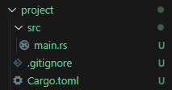

Rust Ownership, borrowing and more concepts
This week we will go through Rust's concept of Ownership, File manipulation, Struct structure, the basics of modules and lists, vectors and hash maps.
1. Rust's Ownership
In this chapter, we go through how Rust's Ownership affects the use of variables, why it is used, and what the benefits are.
Ownership
Ownership is one of Rust's key features that helps manage memory efficiently and safely without a
garbage collector. It defines who owns certain data and how the data can be used during program execution. In this chapter, we will go into more detail about how ownership works and what rules it follows.
In Rust, every variable has an owner. This owner is a variable that controls a particular block of memory. There are three important rules related to ownership:
- Each piece of data has exactly one owner at a time.
- When the owner exits, the data is automatically freed from memory.
- The data can be transferred to a new owner, but in this case the original owner loses his right to it.
These rules ensure that the program does not double deallocate or access memory after a block of memory has already been deallocated.
When a variable is given a new owner, we talk about ownership transfer. For example, when the value of a variable is passed to another variable, the original variable no longer owns that data and cannot be used. This is important to understand, as Rust's compiler prevents attempts to access data whose ownership has been transferred.
Consider the following code example:
fn main() {
let s1 = String::from("Hey");
let s2 = s1; // Ownership transfers from s1 to s2
// println!("{}", s1); // Causes an error, as s1 no longer owns the data
println!("{}", s2); // This works, because s2 now owns the data
}
When s1 is transferred to s2, s1 loses ownership and can no longer be used. This approach helps the programmer avoid mistakes that could lead to inconsistent data usage or memory problems.
In addition to the transfer of ownership, you can also use pointers (references) in Rust, which allow the data to be used without transferring ownership. There are two types of pointers: immutable and mutable references. With immutable references, data can be read but not modified. Data can be modified with variable references, but the same data can only have one mutable referecne at a time. This prevents multiple parallel edits that could lead to an invalid state.
Next, we discuss the principles of loaning a variable and examples of how ownership can be effectively managed in different situations.
An example of a mutable reference:
fn main() {
let mut s = String::from("Hello");
let r = &mut s; // Creation of a mutable reference
r.push_str(", world!"); // Modifying the data through the reference
println!("{}", r); // Using the reference for printing
}
Here, s makes a variable loan to r. During the existence of the loan, s cannot be used directly, which ensures that the modifications are done in a controlled manner.
Using the reference value, we use the push_str command to add more text to an already existing variable. After the change, when we print the variable r, it prints:
Hei, maailma!
When we modify the value of r, we are therefore modifying the value of the s variable through a reference.
Combining mutable and immmutable references
According to Rust's rules, there cannot be an immutable reference and a mutable referenceat the same time. This rule prevents conflicting situations where an immutable reference would be tried to be used for reading data while the data is being modified at the same time.
An example of an incorrect combination:
fn main() {
let mut s = String::from("Hey");
let r1 = &s; // Immutable reference
let r2 = &mut s; // Mutable reference - error!
println!("{}, {}", r1, r2); // This will not work
}
When running the above code, Rust gives an error code and a clear reason why the program does not compile:
error[E0502]: cannot borrow `s` as mutable because it is also borrowed as immutable
--> src/main.rs:5:14
|
4 | let r1 = &s; // Un-mutable reference
| -- immutable borrow occurs here
5 | let r2 = &mut s; // Mutable reference - error!
| ^^^^^^ mutable borrow occurs here
6 |
7 | println!("{}, {}", r1, r2); // This won't work
| -- immutable borrow later used here
This code will not compile because there cannot be an immutable quote r1 and a mutable quote r2 at the same time.
2. Structs, Vec data structure
Struct
Struct, or structure, is a custom data type that lets you pack together and name multiple related values that form a meaningful entity. If you're familiar with an object-oriented language, a structure is like the data attributes of an object. In this chapter, we go through how Structs can be created in Rust.
The following are examples of the struct type:
// struct
struct User {
username: String,
email: String,
sign_in_count: u64,
active: bool,
}
fn main() {
let user1 = User {
username: String::from("example_user"),
email: String::from("example@example.com"),
sign_in_count: 1,
active: true,
};
println!("User name: {}", user1.username);
}
Above we create a new struct type called User. With the User type, we gave four fields:
username, which is of type String,
email, which is also of type String,
sign_in_count of type unsigned integer 64,
active of type boolean.
In the main function, we create a new "instance" of the User type, to which we assign a value to each field. After creation, the instance of the User type is stored in the user1 variable. We can use the values of the fields of the struct in the print statement as we have seen:user1.username
This returns the value of the username field from the user1 variable, which in this case was "example@example.com".
Modifying the fields in a Struct
Since Rust defaults to non-modifiable, we can make our struct editable easily by making the whole struct editable:
struct User {
username: String,
email: String,
sign_in_count: u64,
active: bool,
}
fn main() {
let mut user1 = User {
username: String::from("example_user"),
email: String::from("example@example.com"),
sign_in_count: 1,
active: true,
};
// Modifying the email-attribute
user1.email = String::from("new_email@example.com");
user1.sign_in_count += 1;
println!("Email: {}", user1.email);
}
When defining the User structure in both examples, we used the dedicated String type instead of using the string-slice-based &str type. This is a deliberate choice because we want each instance of this structure to own all of its data, and for the data to persist as long as the entire structure is valid.
It is also possible for structures to store references to data owned elsewhere, but this requires the use of lifetimes, which is a feature of Rust. Lifetimes ensure that the data referenced by the structure remains valid as long as the structure itself is valid. More information about lifetimes in
chapter 10 of the book.
Vec data structure
In Rust, a list corresponds to a data structure that can be used to store and process data elements in sequential order. However, Rust mainly uses the Vec (vector) data type, like lists. Vec is a table that dynamically adapts to its size.
Feature of Vec
- Dynamic size: A vector can grow and shrink during program execution.
- Homogeneous data type: All elements must be of the same type.
- Very efficient and secure in terms of memory management.
When we create a new Vec list, we need to give it a type. In the example below, we use the type i32. Since Vector is a homogeneous data type, it can only contain similar types. If we want the list to contain more than just numbers. We can create a new struct type whose fields have string values, numbers, and, for example, boolean values. We can store this struct type inside a Vec structure, which allows us to work around this limitation.
Let's look at a simple example of a Vec structure:
fn main() {
// Creating a new vector
// with type i32 and make it empty at first
let mut numbers: Vec<i32> = Vec::new();
// Adding elements
numbers.push(10);
numbers.push(20);
numbers.push(30);
println!("Contents of the vector (list of elements): {:?}", numbers);
// Getting elements based on index
let first_element = numbers[0];
println!("First element: {}", first_element);
// Modifying an element based on index
numbers[1] = 25;
println!("Updated vector: {:?}", numbers);
// Iterating through the vector and printing values
for number in &numbers {
println!("Value: {}", number);
}
}The program above prints:
First element: 10
Updated vector: [10, 25, 30]
Value: 10
Value: 25
Value: 30
We can store other values in the list, such as the struct structure we want that contains different values, from strings to numbers.
Below is an example program that stores instances of the struct structure in a list, uses the vec! macro to create a new list, and prints the contents of the list.
// We define our own struct type, which contains different types of fields
struct Person {
name: String,
age: u32,
active: bool,
}
fn main() {
// Create a vector containing Person structs
let people: Vec<Person> = vec![
Person {
name: String::from("John Doe"),
age: 30,
active: true,
},
Person {
name: String::from("Jane Smith"),
age: 25,
active: false,
},
Person {
name: String::from("Jack Bold"),
age: 40,
active: true,
},
];
// Iterate through the vector and print each person's details
for person in people {
println!(
"Name: {}, Age: {}, Active: {}",
person.name, person.age, person.active
);
}
}
Example program's output:
Name: John Doe, Age: 30, Active: true
Name: Jane Smith, Age: 25, Active: false
Name: Jack Bold, Age: 40, Active: true
vec!-macro
Rust makes use of many macros, such as the println! command. The macro is identified by the ! sign. There is a macro vec for the vector type! which is a convenient way provided by Rust to create a new vector without manually calling Vec::new() and adding elements separately with the push command. In the example above, we used this macro to add structs. Below is a simpler example of using a macro.
fn main() {
let numbers = vec![1, 2, 3, 4, 5];
for number in numbers {
println!("Number: {}", number);
}
}
Example program's output:
Number: 1
Number: 2
Number: 3
Number: 4
Number: 5
The vec structure gives us several useful methods:
- push: adds the value you give to the end of the vector/list
- pop: removes the last value from the vector
- get: returns an Option type, a safer way to refer to an element of a vector
- len: returns the length of the vector (the number of elements)
- remove: removes the desired element from the list based on the index
- is_empty: returns true or false, depending on whether the vector is empty or not
The homogeneity of the vec structure can be "circumvented" by using the enum structure as well: more in
chapter 8 of the book.
3. Hashmap
HashMap
HashMap is a data structure that stores key-value pairs. It is part of the std::collections module and is used for key-based retrieval. HashMap uses a hash table to quickly search, insert, and remove keys.
use std::collections::HashMap;
fn main() {
let mut students = HashMap::new();
// Adding three key-value pairs
students.insert("Matti", 25);
students.insert("Anna", 22);
students.insert("Pekka", 28);
// Getting a value based on the key
if let Some(age) = students.get("Anna") {
println!("Anna is {} years old.", age);
}
// Looping through the key-value pairs
for (name, age) in &students {
println!("{} is {} years old.", name, age);
}
// Updating a value
students.insert("Anna", 23);
// Deletion of a key-value pair
students.remove("Pekka");
}
HashMap works if the values
have implemented the Eq and Hash traits. Listings of the types found in the standard library that have implemented these traits can be found on their own pages for the
Eq-trait and the
Hash-traitille. These types include, for example, integers.
HashMap has several useful commands:
- HashMap::new() creates a new hash table
- insert(key, value) inserts a key-value pair into the table
- get(&key) returns the value as a reference if the key is found in the table
- insert(key, new_value) inserts a new value in place of the old one
- remove(&key) removes a key-value pair from the table
Note that "key", "value" and "new_value" are example variable names that must be replaced with the correct variable name as shown above.
4. File manipulation
File processing is a common task in programming. Rust offers powerful tools for handling files using the standard library (std::fs). In Rust, you can write to a file using the std::fs::File class and the write! macro or the std::io::Write trait. Below are instructions and examples of how to work with files in Rust.
Below is an example made in the main.rs file:
use std::fs::File;
use std::io::{self, Write};
fn main() -> io::Result<()> {
// Ask input from the user
println!("Write something to be saved to the file:");
let mut user_input = String::new();
io::stdin()
.read_line(&mut user_input)
.expect("Error reading input!");
// Create or overwrite existing file called input.txt in the project folder
let mut file = File::create("input.txt").expect("Error creating the file!");
// Write user input to the file
file
.write_all(user_input.as_bytes())
.expect("Error writing to the file!");
println!("Input saved to the file 'input.txt'.");
Ok(())
}
In the example, we ask the user for a value and store it in a mutable variable.
We create a file named syote.txt and use the write_all command to write the input given by the user to the file. Write_all tries to write all the given data until there is no data.
More simply, we can also write user read_line input to a file with the
writeln! macro, replacing the write_all use of the file:
writeln!(tiedosto, "{}", syote.trim()).unwrap();
writeln! -macro first contains the file to be saved, next we give { } in a familiar way from the println! macro, and thirdly we give the desired input.
If we don't require any formatting, we can just give the desired input in the second parameter.
5. Modules
What are modules?
Modules in Rust are a way to organize and group program code into logical parts. Modules help keep code clean and manageable, especially in large projects. Modules also allow you to control the visibility of the code so that part of the code is public (pub) and part is private.
In Rust, each file can act as a module, but you can also create submodules inside the same file with the mod keyword. Modules allow separation of reusable code components.
How to create your own module and use it?
Creating your own module in Rust is done with the mod keyword. You can create the module either directly in the file or as a sector-specific module.
An example of a simple module in the same file:
mod utilities {
pub fn greet(name: &str) {
println!("Hey, {}!", name);
}
}Here the module utilities contains the public function greet. Note the pub keyword, which makes the function visible outside the module.
More generally, modules are used in their own folder. Below we see the folder hierarchy after running the
cargo new project command:

To create your own module, create a folder inside the
src folder with the name you want. Create a new Rust file in the folder and give it a name. Also create a
mod.rs where you add:
pub mod {your_module_name};After this, your folder hierarchy should look similar to the one below. I created a folder called
project_module, I created a file called
helper_file.rs and
mod.rs in the folder.
mod.rs file content:
In the helper_file, I made an example function that we call in the main.rs file. The function needs the pub keyword so we can call it. Contents of helper_file:
pub fn printing_function(name: &str) {
println!("Your name seems to be {}.", name);
}
In the main.rs file I call the function, but before that I bring the module to use with the use command, and I define the helper_file to use. Example below:
pub mod project_module;
use project_module::helper_file;
fn main() {
let your_name: &str = "Rust student";
helper_file::printing_function(your_name);
}
The program outputs:
Your name seems to be Rust student.
Note the syntax: using "::" I can call printing_function from helper_file. I could have also imported just a function to use, and simplified the function call like this:
pub mod project_module;
use project_module::helper_file::printing_function;
fn main() {
let your_name: &str = "Rust student";
printing_function(your_name);
}
This way I don't have to use the module name in the function call. If there are many modules, it may be clearer to leave the function name as in the first example.
If the module has more than one function, you can import all the functions with the syntax "
::* " as shown below. We also create another function for the example in the
helper_file:helper_file.rs:
pub fn printing_function(name: &str) {
println!("Your name seems to be {}.", name);
}
pub fn sum_two_number(number1: i32, number2: i32) -> i32 {
number1 + number2
}
Main.rs:
pub mod project_module;
use project_module::helper_file::*;
fn main() {
let your_name: &str = "Rust student";
printing_function(your_name);
let numero1: i32 = 5;
let numero2: i32 = 5;
let summa: i32 = sum_two_number(numero1, numero2);
println!{"{} + {} = {}", numero1, numero2, summa}
}
Program output:
Your name seems to be Rust student.
5 + 5 = 10
6. Enum
Enum
Rust's
Enum construct allows you to define enumerations. The Enum construct can be used to express that a variable can contain one of several options.
enum Color {
Red,
Green,
Blue,
}
fn main() {
let favorite: Color = Color::Green;
match favorite {
Color::Red => println!("Red chosen!"),
Color::Green => println!("Green chosen!"),
Color::Blue => println!("Blue chosen!"),
}
}In the above example, we create a variable called favorite, which is of type "Color". The color can be either "Red", "Green" or "Blue". We select the color using the "
::" operator. This operator is used in addition to the enum structure when referencing modules and functions (std::io, String::from("Hello") ). This operator refers to the "path" to a specific destination.
In the above example, we use a match statement, which prints out which color we selected based on what we gave to the favorite variable.
Enum-type with data
An enum structure can also contain data. We have already seen an example of this with the Option and Result types. Below we see a different example:
enum Message {
Text(String),
Integer(i32),
Stop,
}
fn print_message(message: Message) {
match message {
Message::Text(s) => println!("Text: {}", s),
Message::Integer(n) => println!("Integer: {}", n),
Message::Stop => println!("Ending message"),
}
}
fn main() {
let message = Message::Integer(42);
print_message(message);
}
We create an Enum structure called Message. Message can be of three types, each of which is different. Text can contain a String type, Number can contain an integer, and Quit is a standalone String that contains nothing in itself. Similar to the previous example, we assign the value we want to our variable message, in this case an integer, and print it using a match statement.
Enum - Option and Result type
Earlier we went over the
Option and
Result types. When we look at these types in more detail, we see that they are Enum structures.
pub enum Result<T, E> {
Ok(T),
Err(E),
}
pub enum Option<T> {
None,
Some(T),
}
Result contains two types, either the type we want, or an error. Option contains either the None value, which itself contains nothing, or the Some type, which contains the value T we provide.